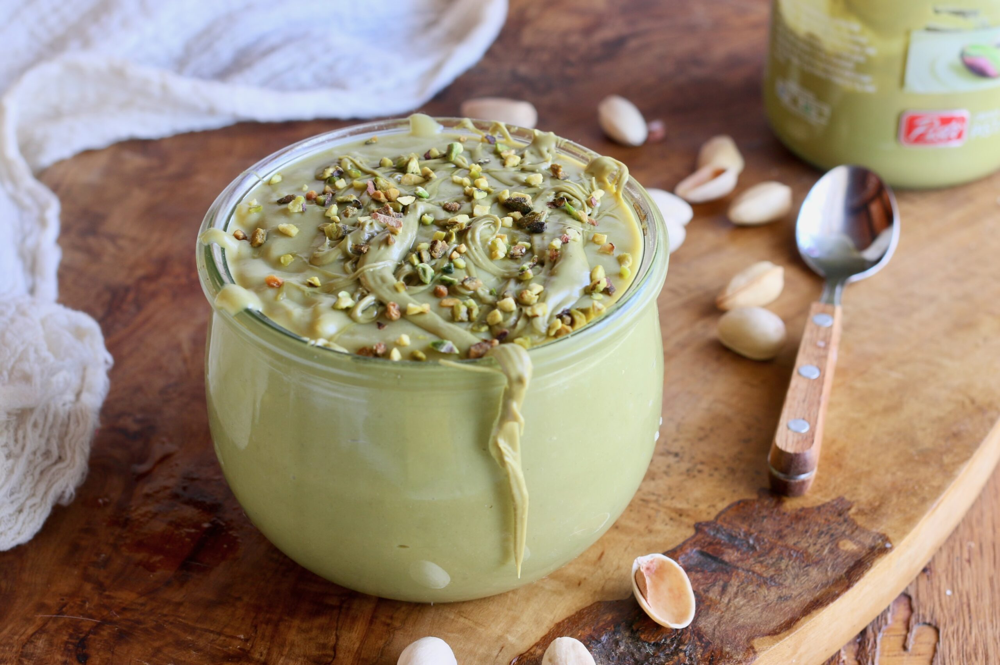

Crema Pasticcera Classica
La regina indiscussa della pasticceria italiana. Una crema vellutata, profumata alla vaniglia e al limone, perfetta da gustare al cucchiaio o per farcire torte, bignè, crostate e tartellette.

Ingredienti
Per la Crema Pasticcera:
- 500ml di Latte intero fresco
- 4 Tuorli d'uovo freschi (medii)
- 140g di Zucchero semolato
- 45g di Amido di mais (Maizena) o amido di riso
- 1 baccello di Vaniglia (o 1 cucchiaino di estratto naturale)
- 1 Limone biologico (la scorza in un'unica striscia)
Varianti di Gusto (A scelta):
- Al Cioccolato: Aggiungi 100g di cioccolato fondente tritato a fine cottura finché è calda.
- Al Liquore: Unisci 2 cucchiai di Limoncello, Strega o Rum una volta tolta dal fuoco.
Procedimento
- Infusione del latte: Versa il latte in un pentolino, aggiungi la scorza di limone e i semi estratti dal baccello di vaniglia (insieme al baccello stesso). Porta quasi a bollore a fuoco dolce, poi spegni e lascia in infusione per qualche minuto.
- Lavorazione dei tuorli: In una ciotola capiente monti i tuorli con lo zucchero usando una frusta a mano o elettrica, finché non diventano chiari e spumosi.
- Aggiunta dell'amido: Setaccia l'amido di mais direttamente sui tuorli montati e incorporalo delicatamente per evitare la formazione di grumi.
- Unione dei composti: Rimuovi la scorza di limone e il baccello di vaniglia dal latte caldo. Versa un mestolo di latte caldo sul composto di uova mescolando subito per stemperare, poi unisci tutto il restante latte a filo.
- Cottura: Versa nuovamente il composto nel pentolino e cuoci a fuoco basso-medio, mescolando continuamente con la frusta finché la crema non si addensa e inizia a sobbollire (circa 3-5 minuti).
- Raffreddamento: Trasferisci subito la crema in una pirofila fredda e copri con pellicola trasparente **a contatto** (facendola aderire direttamente alla superficie per evitare che si formi la crosticina). Lascia raffreddare prima a temperatura ambiente e poi in frigorifero.
💡 Note Finali e Consigli dell'Mastro Pasticcere
- Scelta dell'amido: Usare l'amido di mais (o di riso) al posto della farina rende la crema molto più lucida, setosa e leggera in bocca.
- Trucco del raffreddamento rapido: Per raffreddare velocemente la crema appena cotta ed evitare che continui a cuocere col calore residuo, appoggia la pirofila sopra un bagnomaria freddo con acqua e cubetti di ghiaccio.
- Conservazione: La crema pasticcera si conserva in frigorifero coperta a contatto per 2-3 giorni al massimo.